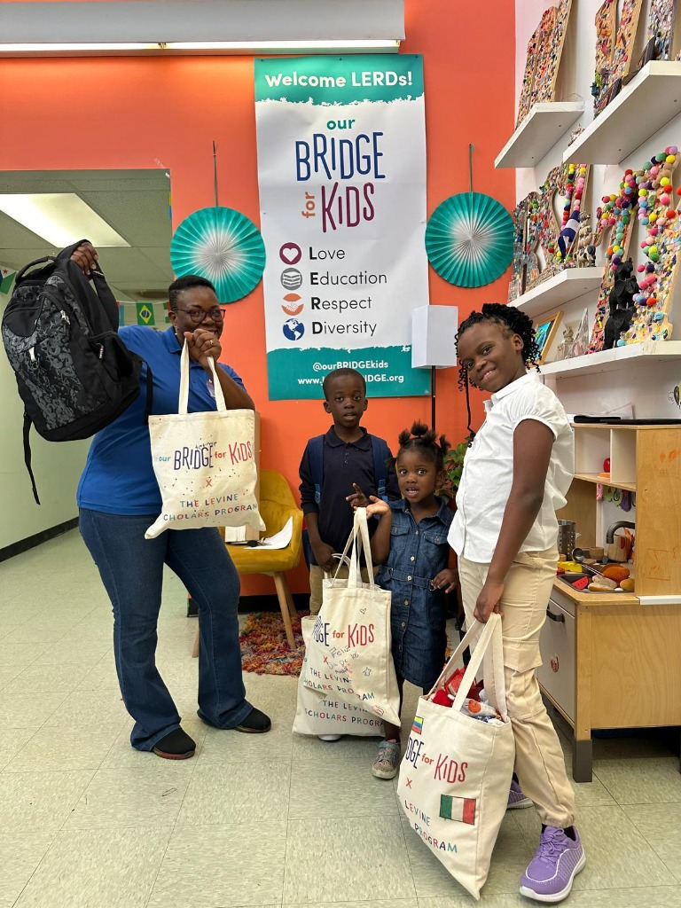

Breaking Language Barriers, Opening Doors to Learning
When language becomes a barrier, children can miss opportunities to succeed.
A family reached out to Amani Kids because their children were struggling in school. As non-English speakers, the children faced difficulties understanding and communicating in English, making it challenging to fully participate in their educational experience.
Amani Kids listened to the family's concerns and helped connect the children to an after-school program in Charlotte dedicated to supporting immigrant children.
Through this connection, the children gained access to additional learning support and an environment where they could continue developing their language skills and building confidence.

By connecting families with the right educational resources, we help children overcome barriers and create pathways toward academic success.